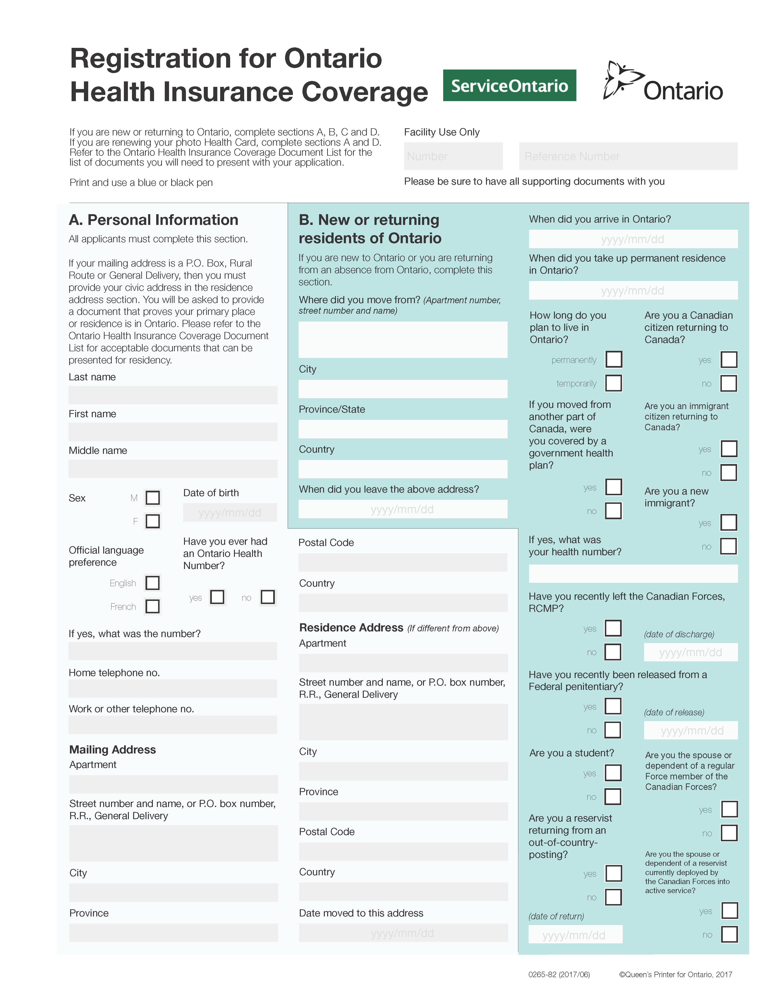
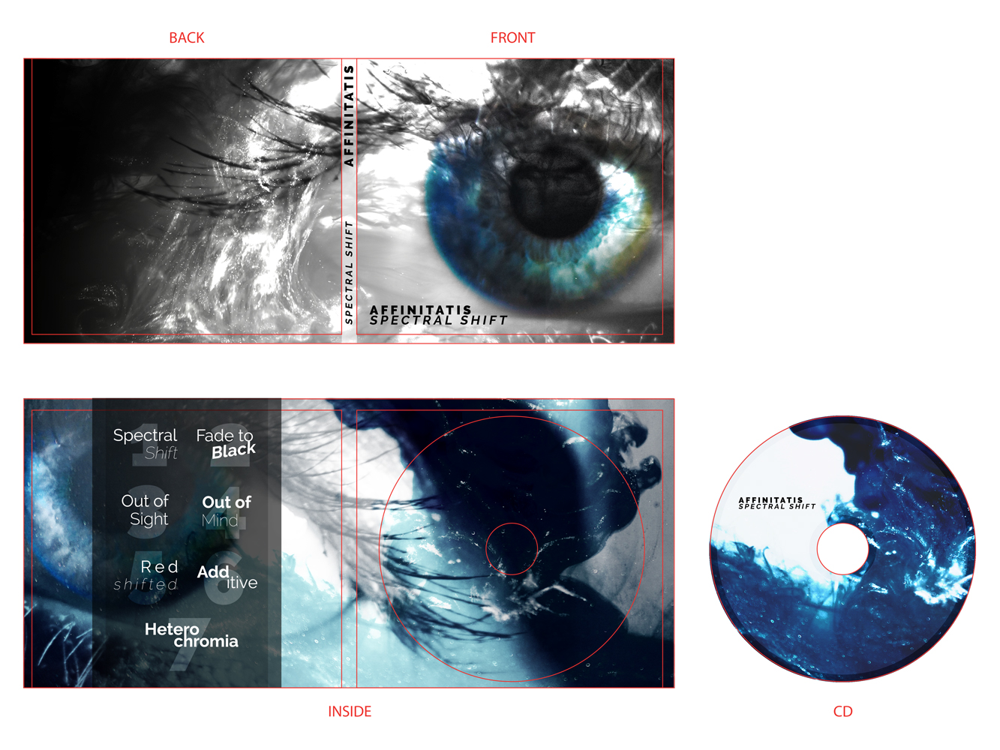
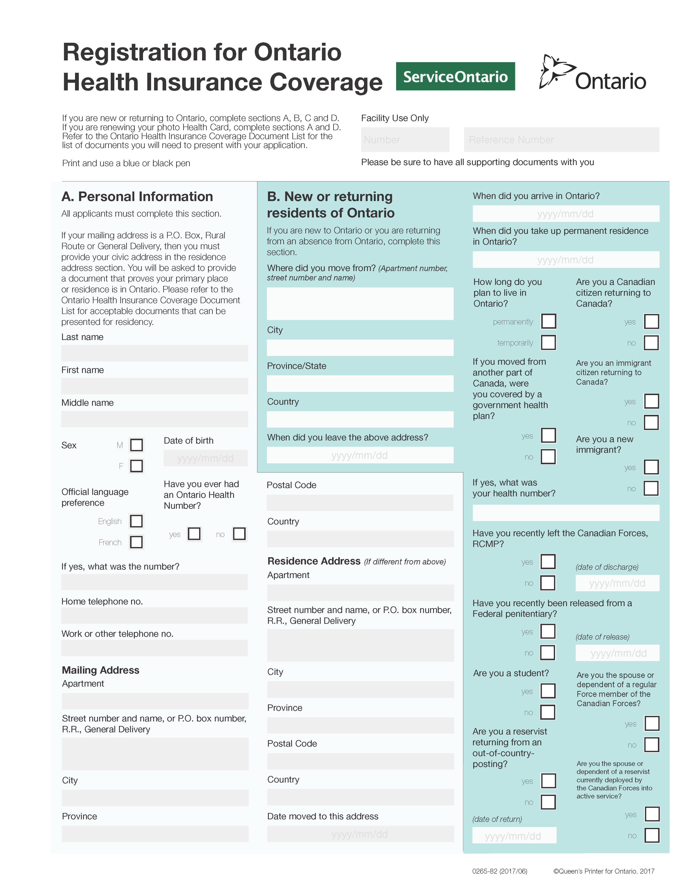
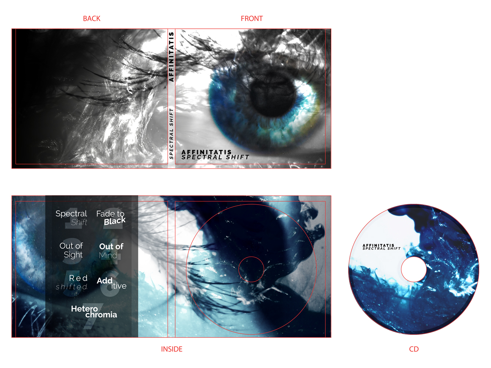
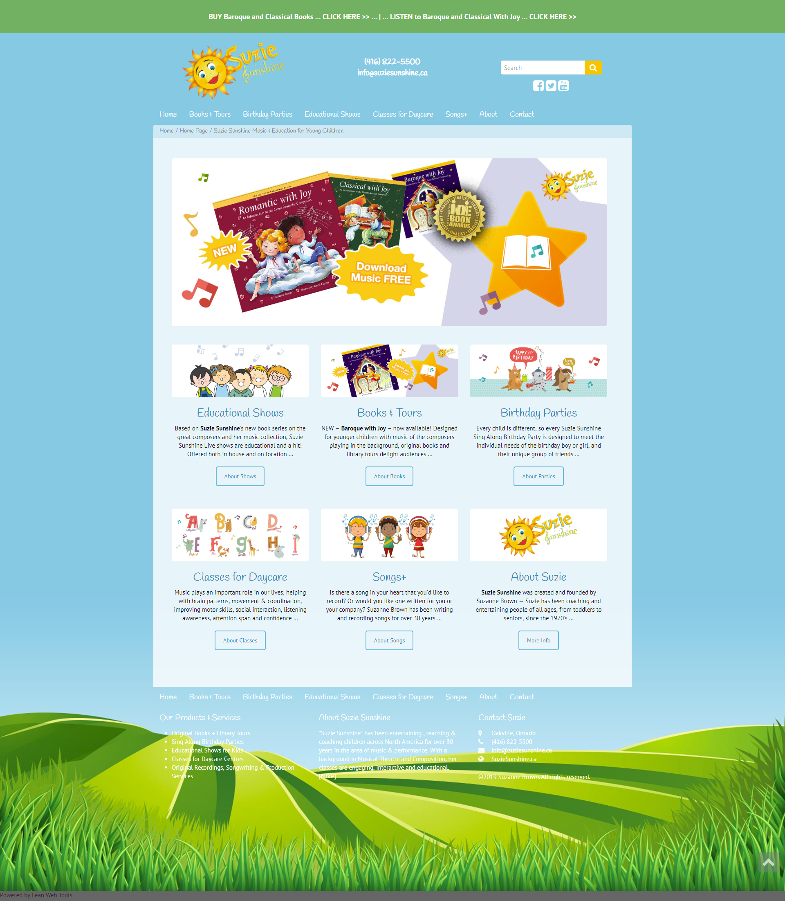
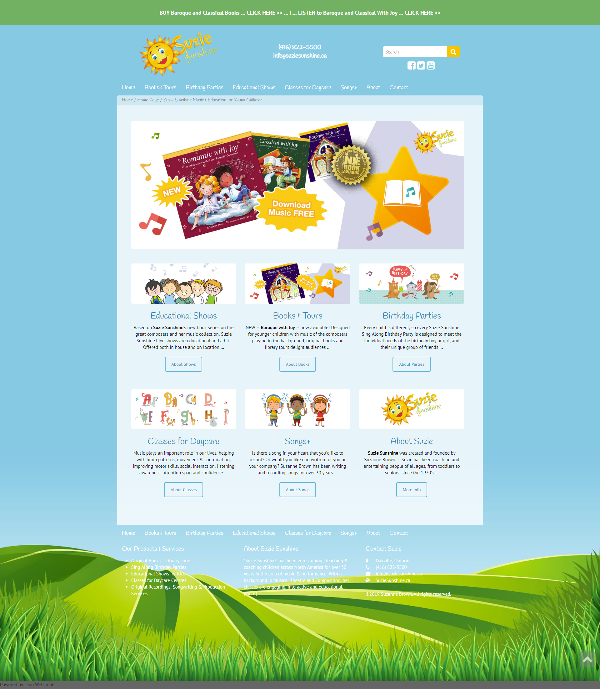
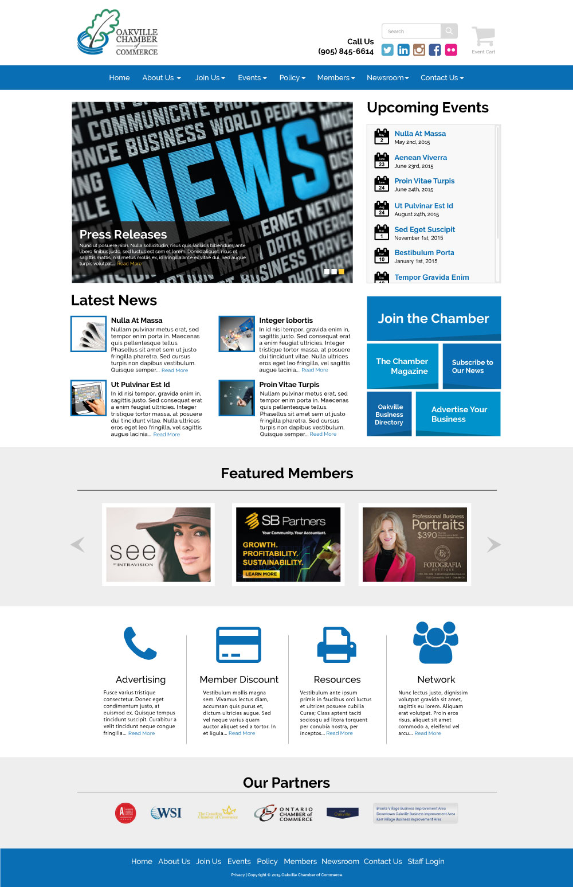
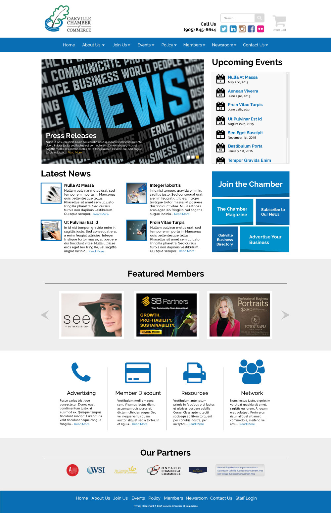

 

 


Hello!
Welcome to my website, and my about page!
My name, as you can probably guess from the sidebar, is Sam Rasmussen. I'm a young graphic designer with a broad range of experience and skills to bring to the table including Motion Graphics, Digital Illustration, and Photography.
I have received formal training through the Ontario College of Art and Design University, graduating in 2019 with a Bachelor of Design in Graphic Design. I have also accrued through the past few years a wealth of freelance experience that I feel puts me in a very strong spot within today’s environment.
If you have any questions about my portfolio or anything else you would like to ask, feel free to contact me by clicking here or sending an email to sam@emmadee.com and I will get back to you as soon as possible.
Thank you for visiting!